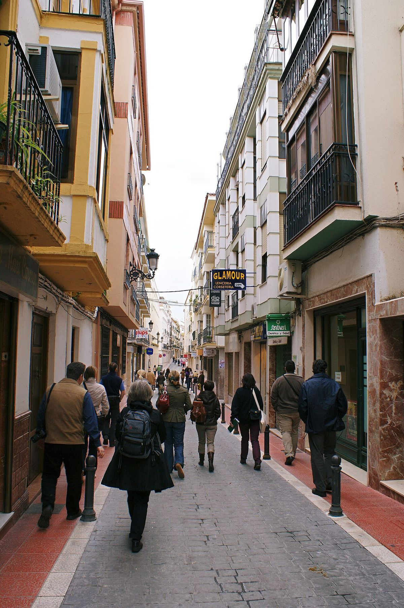

Gemelos electorales · Elecciones: 2004-2023
Cabra y Montilla votaban igual. Ya no
En 2004 Cabra y Montilla votaban igual; en 2023 las separaban 12 puntos de voto a la derecha
Por Nacho G. del Álamo ·
Cabra y Montilla, en el sur de Córdoba, tienen casi la misma renta (17.575 y 17.813 euros), la misma edad media y el mismo paro. En 2004 el PP sacó en las dos casi lo mismo (29,0 % y 27,8 %). Desde entonces se han ido separando: en 2023 la derecha sacó el 55,1 % en Cabra, donde ganó el PP, y el 42,8 % en Montilla, donde ganó el PSOE.
Dato: verificable y reproducible
Ver Cabra en el mapa →Ver Montilla en el mapa →
La pregunta: ¿Cuándo y cómo empezaron a votar distinto dos ciudades cordobesas con el mismo perfil?
Dos ciudades casi idénticas
DatoSi se buscan en Andalucía dos municipios medianos que se parezcan en todo lo que mide el INE, salen Cabra y Montilla, en la campiña y la Subbética de Córdoba. Renta por unidad de consumo: 17.575 y 17.813 euros. Edad media: 44,8 y 45,1 años. Paro: 18,6 % y 19,4 %. Estudios superiores: 26,7 % y 26,8 %. Población: 19.869 y 22.100 habitantes.
2004: el mismo punto de partida
DatoEn las generales de 2004 votaron como gemelas. El PSOE sacó el 49,4 % en Cabra y el 49,2 % en Montilla; el PP, el 29,0 % y el 27,8 %.
Cómo se abrió la brecha
DatoLa primera grieta llegó en 2008. El PP subió en Cabra hasta el 36,7 % y en Montilla apenas se movió (29,6 %), mientras el PSOE crecía más en Montilla (54,6 %) que en Cabra (51,1 %). En 2011, el año de la mayoría absoluta del PP, la distancia se mantuvo: 44,5 % frente a 38,3 %.
DatoCiudadanos no la ensanchó. En 2015 sacó casi lo mismo en las dos ciudades (11,9 % y 12,2 %), y en abril de 2019, 16,2 % y 17,0 %.
DatoVox, sí. En abril de 2019 sacó el 12,4 % en Cabra y el 7,3 % en Montilla. En noviembre de ese año, el 24,3 % y el 11,4 %: uno de cada cuatro votos en Cabra. En 2023 bajó al 15,9 % y al 8,8 %.
DatoEl resultado de 2023 es el de dos ciudades que ya no se parecen en las urnas. En Cabra ganó el PP, con el 39,2 % frente al 30,9 % del PSOE. En Montilla ganó el PSOE, con el 37,5 % frente al 34,1 % del PP.
PatrónSumados PP, Vox y Cs, la distancia pasó de 1,2 puntos en 2004 a 12,3 en 2023. Se abrió en dos tiempos, con el PP desde 2008 y con Vox desde 2019, y no se ha vuelto a cerrar.
Sobre el terreno
DatoMontilla es la ciudad natal de Gonzalo Fernández de Córdoba, el Gran Capitán, nacido en 1453. Fuentes: 1, 2
DatoCabra es la cuna del novelista Juan Valera, autor de «Pepita Jiménez», que nació allí el 18 de octubre de 1824. Fuentes: 1, 2
Lo que no sabemos
- HipótesisPor qué el PP y Vox crecieron más en una ciudad que en la otra. Hipótesis por contrastar: estructura productiva (la economía del vino en Montilla), historia municipal y liderazgos locales. Sin dos fuentes, ninguna se afirma.
Dato: verificable y reproducible. Patrón: relación descriptiva, sin causa. Hipótesis: explicación posible que aún no tiene dos fuentes independientes.
Los datos
| Elección | Cabra | Montilla | Diferencia |
|---|---|---|---|
| 2004 | 29,0 | 27,8 | 1,2 |
| 2008 | 36,7 | 29,7 | 7,0 |
| 2011 | 44,5 | 38,3 | 6,2 |
| 2015 | 48,0 | 36,9 | 11,1 |
| 2016 | 52,9 | 40,9 | 12,0 |
| abr. 2019 | 51,4 | 39,3 | 12,1 |
| nov. 2019 | 54,7 | 39,5 | 15,2 |
| 2023 | 55,1 | 42,8 | 12,3 |
Preguntas
¿Cómo se eligen los gemelos?
Se estandarizan seis indicadores (renta, edad media, porcentaje de extranjeros, estudios superiores, paro y tamaño) y se buscan pares de municipios de más de 15.000 habitantes de la misma comunidad con la menor distancia entre ellos.
Método y fuentes
- Qué se compara
- Dos municipios de entre 19.000 y 23.000 habitantes de la provincia de Córdoba, elegidos por ser de los más parecidos de Andalucía en renta, edad, extranjeros, estudios, paro y tamaño.
- Límites
- «Gemelos» según seis indicadores del INE; pueden diferir en otros (estructura económica, historia, oferta electoral local) que los datos no recogen.
- Metodología completa
- Cómo se calculan los porcentajes, el modelo, los gemelos y los escaños
- Fuentes
- Ministerio del Interior, resultados electorales por mesa (Infoelectoral). Congreso 2004-2023 vía pollspaindata, commit ee5ecda; municipales 2007-2023 de los ficheros de Infoelectoral
- INE, Atlas de Distribución de Renta de los Hogares 2023 (renta, edad, población), vía ineAtlas.data
- INE, Censo de Población y Viviendas 2021 (estudios, paro, extranjeros)
- Autoría
- Nacho G. del Álamo
- Revisión de datos y texto
- Nacho G. del Álamo, 6 de octubre de 2026
- Publicado · actualizado
- 6 de octubre de 2026 · 7 de octubre de 2026
- Correcciones
- Ninguna. Historial del Atlas